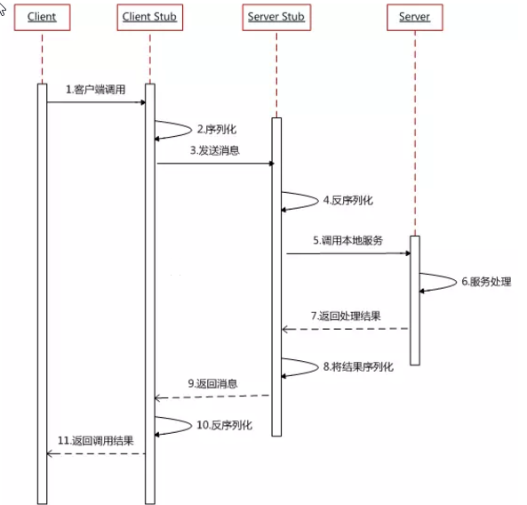
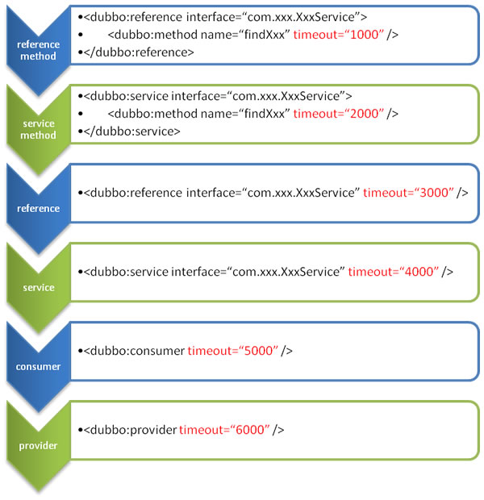

一、基础知识
1. 分布式基础理论
1.1） 什么事分布式系统？
《分布式系统原理与范型》定义：
“分布式系统是若干独立计算机的集合，这些计算机对于用户来说就像单个相关系统”
分布式系统（distributed system）是建立在网络之上的软件系统。
随着互联网的发展，网站应用的规模不断扩大，常规的垂直应用架构已无法应对，分布式服务架构以及流动计算架构势在必行，亟需一个治理系统确保架构有条不紊的演进。
1.2） 发展演变
单一应用架构
当网站流量很小时，只需一个应用，将所有功能都部署在一起，以减少部署节点和成本。此时，用于简化增删改查工作量的数据访问框架(ORM)是关键。
适用于小型网站，小型管理系统，将所有功能都部署到一个功能里，简单易用。
缺点： 1、性能扩展比较难
2、协同开发问题
3、不利于升级维护
垂直应用架构
当访问量逐渐增大，单一应用增加机器带来的加速度越来越小，将应用拆成互不相干的几个应用，以提升效率。此时，用于加速前端页面开发的Web框架(MVC)是关键。
通过切分业务来实现各个模块独立部署，降低了维护和部署的难度，团队各司其职更易管理，性能扩展也更方便，更有针对性。
缺点： 公用模块无法重复利用，开发性的浪费
分布式服务架构
当垂直应用越来越多，应用之间交互不可避免，将核心业务抽取出来，作为独立的服务，逐渐形成稳定的服务中心，使前端应用能更快速的响应多变的市场需求。此时，用于提高业务复用及整合的分布式服务框架(RPC)是关键。
流动计算架构
当服务越来越多，容量的评估，小服务资源的浪费等问题逐渐显现，此时需增加一个调度中心基于访问压力实时管理集群容量，提高集群利用率。此时，用于提高机器利用率的资源调度和治理中心(SOA)[ Service Oriented Architecture]是关键。
1.3） RPC
什么叫RPC
RPC【Remote Procedure Call】是指远程过程调用，是一种进程间通信方式，他是一种技术的思想，而不是规范。它允许程序调用另一个地址空间（通常是共享网络的另一台机器上）的过程或函数，而不用程序员显式编码这个远程调用的细节。即程序员无论是调用本地的还是远程的函数，本质上编写的调用代码基本相同。
RPC基本原理


RPC两个核心模块：通讯，序列化。
2、dubbo核心概念
2.1） 简介
Apache Dubbo (incubating) |ˈdʌbəʊ| 是一款高性能、轻量级的开源Java RPC框架，它提供了三大核心能力：面向接口的远程方法调用，智能容错和负载均衡，以及服务自动注册和发现。
官网：
2.2） 基本概念

服务提供者（Provider）：暴露服务的服务提供方，服务提供者在启动时，向注册中心注册自己提供的服务。
服务消费者（Consumer）: 调用远程服务的服务消费方，服务消费者在启动时，向注册中心订阅自己所需的服务，服务消费者，从提供者地址列表中，基于软负载均衡算法，选一台提供者进行调用，如果调用失败，再选另一台调用。
注册中心（Registry）：注册中心返回服务提供者地址列表给消费者，如果有变更，注册中心将基于长连接推送变更数据给消费者
监控中心（Monitor）：服务消费者和提供者，在内存中累计调用次数和调用时间，定时每分钟发送一次统计数据到监控中心
》调用关系说明
服务容器负责启动，加载，运行服务提供者。
服务提供者在启动时，向注册中心注册自己提供的服务。
服务消费者在启动时，向注册中心订阅自己所需的服务。
注册中心返回服务提供者地址列表给消费者，如果有变更，注册中心将基于长连接推送变更数据给消费者。
服务消费者，从提供者地址列表中，基于软负载均衡算法，选一台提供者进行调用，如果调用失败，再选另一台调用。
服务消费者和提供者，在内存中累计调用次数和调用时间，定时每分钟发送一次统计数据到监控中心。
3、dubbo环境搭建
3.1） 【Windows】-安装zookeeper
1、下载zookeeper
网址 https://archive.apache.org/dist/zookeeper/zookeeper-3.4.13/
2、解压zookeeper
解压运行zkServer.cmd ，初次运行会报错，没有zoo.cfg配置文件
3、修改zoo.cfg配置文件
将conf下的zoo_sample.cfg复制一份改名为zoo.cfg即可。
注意几个重要位置：
dataDir=./ 临时数据存储的目录（可写相对路径）
clientPort=2181 zookeeper的端口号
修改完成后再次启动zookeeper
4、使用zkCli.cmd测试
ls /：列出zookeeper根下保存的所有节点
create –e /atguigu 123：创建一个atguigu节点，值为123
get /atguigu：获取/atguigu节点的值
3.2） 【Windows】-安装dubbo-admin管理控制台
dubbo本身并不是一个服务软件。它其实就是一个jar包能够帮你的java程序连接到zookeeper，并利用zookeeper消费、提供服务。所以你不用在Linux上启动什么dubbo服务。
但是为了让用户更好的管理监控众多的dubbo服务，官方提供了一个可视化的监控程序，不过这个监控即使不装也不影响使用。
安装步骤如下：
在打包之前进入文件dubbo-admin-server/src/main/resources/application.properties
修改为指定zookeeper地址
3.3） 【linux】-安装zookeeper
安装jdk
安装zookeeper
1》下载zookeeper
网址 https://archive.apache.org/dist/zookeeper/zookeeper-3.4.11/
wget https://archive.apache.org/dist/zookeeper/zookeeper-3.4.11/zookeeper-3.4.11.tar.gz
2》解压
tar -zxvf zookeeper-3.4.11.tar.gz3》移动到指定位置并改名为zookeeper
mv zookeeper-3.4.11 /usr/local/zookeeper- 开机启动zookeeper
1）-复制如下脚本
#!/bin/bash
#chkconfig:2345 20 90
#description:zookeeper
#processname:zookeeper
ZK_PATH=/usr/local/zookeeper
export JAVA_HOME=/usr/local/java/jdk1.8.0_171
case $1 in
start) sh $ZK_PATH/bin/zkServer.sh start;;
stop) sh $ZK_PATH/bin/zkServer.sh stop;;
status) sh $ZK_PATH/bin/zkServer.sh status;;
restart) sh $ZK_PATH/bin/zkServer.sh restart;;
*) echo "require start|stop|status|restart" ;;
esac
2) 把脚本注册为Service
chkconfig --add zookeeper
chkconfig --list
3) -增加权限
chmod +x /etc/init.d/zookeeper
ll /etc/init.d配置zookeeper
1》初始化zookeeper配置文件
拷贝/usr/local/zookeeper/conf/zoo_sample.cfg到同一目录下改名为zoo.cfg
2》启动zookeeper
service zookeeper start
4、dubbo-helloworld
4.1） 提出需求
某个电商系统，订单服务需要调用用户服务获取某个用户的所有地址；
我们现在 需要创建两个服务模块进行测试
| 模块 | 功能 |
|---|---|
| 订单服务web模块 | 创建订单等 |
| 用户服务service模块 | 查询用户地址等 |
测试预期结果：
订单服务web模块在A服务器，用户服务模块在B服务器，A可以远程调用B的功能。
4.2） 工程架构
根据 dubbo《服务化最佳实践》
1.分包
建议将服务接口，服务模型，服务异常等均放在 API 包中，因为服务模型及异常也是 API 的一部分，同时，这样做也符合分包原则：重用发布等价原则(REP)，共同重用原则(CRP)。
如果需要，也可以考虑在 API 包中放置一份 spring 的引用配置，这样使用方，只需在 spring 加载过程中引用此配置即可，配置建议放在模块的包目录下，以免冲突，如：com/alibaba/china/xxx/dubbo-reference.xml。
2.粒度
服务接口尽可能大粒度，每个服务方法应代表一个功能，而不是某功能的一个步骤，否则将面临分布式事务问题，Dubbo 暂未提供分布式事务支持。
服务接口建议以业务场景为单位划分，并对相近业务做抽象，防止接口数量爆炸。
不建议使用过于抽象的通用接口，如：Map query(Map)，这样的接口没有明确语义，会给后期维护带来不便。
4.3) 创建模块
1、gmall-interface：公共接口层（model，service，exception…）
作用：定义公共接口，也可以导入公共依赖
1、Bean模型
public class UserAddress implements Serializable{
private Integer id;
private String userAddress;
private String userId;
private String consignee;
private String phoneNum;
private String isDefault;
}
2、Service接口
UserService
public List<UserAddress> getUserAddressList(String userId)2、gmall-user：用户模块（对用户接口的实现）
1、pom.xml
<dependencies>
<dependency>
<groupId>com.atguigu.dubbo</groupId>
<artifactId>gmall-interface</artifactId>
<version>0.0.1-SNAPSHOT</version>
</dependency>
</dependencies>2、Service
public class UserServiceImpl implements UserService {
@Override
public List<UserAddress> getUserAddressList(String userId) {
// TODO Auto-generated method stub
return userAddressDao.getUserAddressById(userId);
}
}3、gmall-order-web：订单模块（调用用户模块）
1、pom.xml
<dependencies>
<dependency>
<groupId>com.atguigu.dubbo</groupId>
<artifactId>gmall-interface</artifactId>
<version>0.0.1-SNAPSHOT</version>
</dependency>
</dependencies>2、测试
public class OrderService {
UserService userService;
/**
* 初始化订单，查询用户的所有地址并返回
* @param userId
* @return
*/
public List<UserAddress> initOrder(String userId){
return userService.getUserAddressList(userId);
}
}现在这样是无法进行调用的。我们gmall-order-web引入了gmall-interface，但是interface的实现是gmall-user，我们并没有引入，而且实际他可能还在别的服务器中。
4.4) 使用dubbo改造
1、改造gmall-user作为服务提供者
1、引入dubbo
<!-- 引入dubbo -->
<dependency>
<groupId>com.alibaba</groupId>
<artifactId>dubbo</artifactId>
<version>2.6.2</version>
</dependency>
<!-- 由于我们使用zookeeper作为注册中心，所以需要操作zookeeper
dubbo 2.6以前的版本引入zkclient操作zookeeper
dubbo 2.6及以后的版本引入curator操作zookeeper
下面两个zk客户端根据dubbo版本2选1即可
-->
<dependency>
<groupId>com.101tec</groupId>
<artifactId>zkclient</artifactId>
<version>0.10</version>
</dependency>
<!-- curator-framework -->
<dependency>
<groupId>org.apache.curator</groupId>
<artifactId>curator-framework</artifactId>
<version>2.12.0</version>
</dependency>2、配置提供者
<!--当前应用的名字 -->
<dubbo:application name="gmall-user"></dubbo:application>
<!--指定注册中心的地址 -->
<dubbo:registry address="zookeeper://118.24.44.169:2181" />
<!--使用dubbo协议，将服务暴露在20880端口 -->
<dubbo:protocol name="dubbo" port="20880" />
<!-- 指定需要暴露的服务 -->
<dubbo:service interface="com.atguigu.gmall.service.UserService"
ref="userServiceImpl" />3、启动服务
public static void main(String[] args) throws IOException {
ClassPathXmlApplicationContext context =
new ClassPathXmlApplicationContext("classpath:spring-beans.xml");
System.in.read();
}2、改造gmall-order-web作为服务消费者
1、引入dubbo
<!-- 引入dubbo -->
<dependency>
<groupId>com.alibaba</groupId>
<artifactId>dubbo</artifactId>
<version>2.6.2</version>
</dependency>
<!-- 由于我们使用zookeeper作为注册中心，所以需要引入zkclient和curator操作zookeeper -->
<dependency>
<groupId>com.101tec</groupId>
<artifactId>zkclient</artifactId>
<version>0.10</version>
</dependency>
<!-- curator-framework -->
<dependency>
<groupId>org.apache.curator</groupId>
<artifactId>curator-framework</artifactId>
<version>2.12.0</version>
</dependency>2、配置消费者信息
<!-- 应用名 -->
<dubbo:application name="gmall-order-web"></dubbo:application>
<!-- 指定注册中心地址 -->
<dubbo:registry address="zookeeper://118.24.44.169:2181" />
<!-- 生成远程服务代理，可以和本地bean一样使用demoService -->
<dubbo:reference id="userService"
interface="com.atguigu.gmall.service.UserService"></dubbo:reference>3、测试调用
访问gmall-order-web的initOrder请求，会调用UserService获取用户地址；
调用成功。说明我们order已经可以调用远程的UserService了；
4、注解版
1、服务提供方
<dubbo:application name="gmall-user"></dubbo:application>
<dubbo:registry address="zookeeper://118.24.44.169:2181" />
<dubbo:protocol name="dubbo" port="20880" />
<dubbo:annotation package="com.atguigu.gmall.user.impl"/>
import com.alibaba.dubbo.config.annotation.Service;
import com.atguigu.gmall.bean.UserAddress;
import com.atguigu.gmall.service.UserService;
import com.atguigu.gmall.user.mapper.UserAddressMapper;
@Service //使用dubbo提供的service注解，注册暴露服务
public class UserServiceImpl implements UserService {
@Autowired
UserAddressMapper userAddressMapper;2、服务消费方
<dubbo:application name="gmall-order-web"></dubbo:application>
<dubbo:registry address="zookeeper://118.24.44.169:2181" />
<dubbo:annotation package="com.atguigu.gmall.order.controller"/>
@Controller
public class OrderController {
@Reference //使用dubbo提供的reference注解引用远程服务
UserService userService;5、监控中心
5.1）、dubbo-admin
图形化的服务管理页面；安装时需要指定注册中心地址，即可从注册中心中获取到所有的提供者/消费者进行配置管理
5.2）、dubbo-monitor-simple
略
6、整合SpringBoot
引入spring-boot-starter以及dubbo和curator的依赖
<dependency>
<groupId>com.alibaba.boot</groupId>
<artifactId>dubbo-spring-boot-starter</artifactId>
<version>0.2.0</version>
</dependency>配置application.properties
提供者配置：
dubbo.application.name=gmall-user
dubbo.registry.protocol=zookeeper
dubbo.registry.address=192.168.67.159:2181
dubbo.scan.base-package=com.atguigu.gmall
dubbo.protocol.name=dubbo
application.name就是服务名，不能跟别的dubbo提供端重复
registry.protocol 是指定注册中心协议
registry.address 是注册中心的地址加端口号
protocol.name 是分布式固定是dubbo,不要改。
base-package 注解方式要扫描的包
消费者配置：
dubbo.application.name=gmall-order-web
dubbo.registry.protocol=zookeeper
dubbo.registry.address=192.168.67.159:2181
dubbo.scan.base-package=com.atguigu.gmall
dubbo.protocol.name=dubbodubbo注解
@Service、@Reference
【如果没有在配置中写dubbo.scan.base-package,还需要使用@EnableDubbo注解】
二、dubbo配置
1、配置原则
JVM 启动 -D 参数优先，这样可以使用户在部署和启动时进行参数重写，比如在启动时需改变协议的端口。
XML 次之，如果在 XML 中有配置，则 dubbo.properties 中的相应配置项无效。
Properties 最后，相当于缺省值，只有 XML 没有配置时，dubbo.properties 的相应配置项才会生效，通常用于共享公共配置，比如应用名。
2、重试次数
失败自动切换，当出现失败，重试其它服务器，但重试会带来更长延迟。可通过 retries=”2” 来设置重试次数(不含第一次)。
重试次数配置如下：
<dubbo:service retries="2" />
或
<dubbo:reference retries="2" />
或
<dubbo:reference>
<dubbo:method name="findFoo" retries="2" />
</dubbo:reference>3、超时时间
由于网络或服务端不可靠，会导致调用出现一种不确定的中间状态（超时）。为了避免超时导致客户端资源（线程）挂起耗尽，必须设置超时时间。
1、Dubbo消费端
全局超时配置
<dubbo:consumer timeout="5000" />
指定接口以及特定方法超时配置
<dubbo:reference interface="com.foo.BarService" timeout="2000">
<dubbo:method name="sayHello" timeout="3000" />
</dubbo:reference>2、Dubbo服务端
全局超时配置
<dubbo:provider timeout="5000" />
指定接口以及特定方法超时配置
<dubbo:provider interface="com.foo.BarService" timeout="2000">
<dubbo:method name="sayHello" timeout="3000" />
</dubbo:provider>3、配置原则
dubbo推荐在Provider上尽量多配置Consumer端属性：
1、作服务的提供者，比服务使用方更清楚服务性能参数，如调用的超时时间，合理的重试次数，等等
2、在Provider配置后，Consumer不配置则会使用Provider的配置值，即Provider配置可以作为Consumer的缺省值。否则，Consumer会使用Consumer端的全局设置，这对于Provider不可控的，并且往往是不合理的
配置的覆盖规则：
1) 方法级配置别优于接口级别，即小Scope优先
2) Consumer端配置 优于 Provider配置 优于 全局配置，
3) 最后是Dubbo Hard Code的配置值（见配置文档）

4、版本号
当一个接口实现，出现不兼容升级时，可以用版本号过渡，版本号不同的服务相互间不引用。
可以按照以下的步骤进行版本迁移：
在低压力时间段，先升级一半提供者为新版本
再将所有消费者升级为新版本
然后将剩下的一半提供者升级为新版本
老版本服务提供者配置：
<dubbo:service interface="com.foo.BarService" version="1.0.0" />
新版本服务提供者配置：
<dubbo:service interface="com.foo.BarService" version="2.0.0" />
老版本服务消费者配置：
<dubbo:reference id="barService" interface="com.foo.BarService" version="1.0.0" />
新版本服务消费者配置：
<dubbo:reference id="barService" interface="com.foo.BarService" version="2.0.0" />
如果不需要区分版本，可以按照以下的方式配置：
<dubbo:reference id="barService" interface="com.foo.BarService" version="*" />三、高可用
1、zookeeper宕机与dubbo直连
现象：zookeeper注册中心宕机，还可以消费dubbo暴露的服务。
原因：
健壮性
监控中心宕掉不影响使用，只是丢失部分采样数据
数据库宕掉后，注册中心仍能通过缓存提供服务列表查询，但不能注册新服务
注册中心对等集群，任意一台宕掉后，将自动切换到另一台
注册中心全部宕掉后，服务提供者和服务消费者仍能通过本地缓存通讯
服务提供者无状态，任意一台宕掉后，不影响使用
服务提供者全部宕掉后，服务消费者应用将无法使用，并无限次重连等待服务提供者恢复
高可用：通过设计，减少系统不能提供服务的时间；
2、集群下dubbo负载均衡配置
在集群负载均衡时，Dubbo 提供了多种均衡策略，缺省为 random 随机调用。
负载均衡策略
Random LoadBalance
随机，按权重设置随机概率。
在一个截面上碰撞的概率高，但调用量越大分布越均匀，而且按概率使用权重后也比较均匀，有利于动态调整提供者权重。
RoundRobin LoadBalance
轮循，按公约后的权重设置轮循比率。
存在慢的提供者累积请求的问题，比如：第二台机器很慢，但没挂，当请求调到第二台时就卡在那，久而久之，所有请求都卡在调到第二台上。
LeastActive LoadBalance
最少活跃调用数，相同活跃数的随机，活跃数指调用前后计数差。
使慢的提供者收到更少请求，因为越慢的提供者的调用前后计数差会越大。
ConsistentHash LoadBalance
一致性 Hash，相同参数的请求总是发到同一提供者。
当某一台提供者挂时，原本发往该提供者的请求，基于虚拟节点，平摊到其它提供者，不会引起剧烈变动。算法参见：http://en.wikipedia.org/wiki/Consistent_hashing
缺省只对第一个参数 Hash，如果要修改，请配置 <dubbo:parameter key=”hash.arguments” value=”0,1” />
缺省用 160 份虚拟节点，如果要修改，请配置 <dubbo:parameter key=”hash.nodes” value=”320” />
3、整合hystrix，服务熔断与降级处理
1、服务降级
什么是服务降级？
当服务器压力剧增的情况下，根据实际业务情况及流量，对一些服务和页面有策略的不处理或换种简单的方式处理，从而释放服务器资源以保证核心交易正常运作或高效运作。
可以通过服务降级功能临时屏蔽某个出错的非关键服务，并定义降级后的返回策略。
向注册中心写入动态配置覆盖规则：
RegistryFactory registryFactory = ExtensionLoader.getExtensionLoader(RegistryFactory.class).getAdaptiveExtension();
Registry registry = registryFactory.getRegistry(URL.valueOf("zookeeper://10.20.153.10:2181"));
registry.register(URL.valueOf("override://0.0.0.0/com.foo.BarService?category=configurators&dynamic
=false&application=foo&mock=force:return+null"));其中：
mock=force:return+null 表示消费方对该服务的方法调用都直接返回 null 值，不发起远程调用。用来屏蔽不重要服务不可用时对调用方的影响。
还可以改为 mock=fail:return+null 表示消费方对该服务的方法调用在失败后，再返回 null 值，不抛异常。用来容忍不重要服务不稳定时对调用方的影响。
2、集群容错
在集群调用失败时，Dubbo 提供了多种容错方案，缺省为 failover 重试。
集群容错模式
Failover Cluster
失败自动切换，当出现失败，重试其它服务器。通常用于读操作，但重试会带来更长延迟。可通过 retries="2" 来设置重试次数(不含第一次)。
重试次数配置如下：
<dubbo:service retries="2" />
或
<dubbo:reference retries="2" />
或
<dubbo:reference>
<dubbo:method name="findFoo" retries="2" />
</dubbo:reference>
Failfast Cluster
快速失败，只发起一次调用，失败立即报错。通常用于非幂等性的写操作，比如新增记录。
Failsafe Cluster
失败安全，出现异常时，直接忽略。通常用于写入审计日志等操作。
Failback Cluster
失败自动恢复，后台记录失败请求，定时重发。通常用于消息通知操作。
Forking Cluster
并行调用多个服务器，只要一个成功即返回。通常用于实时性要求较高的读操作，但需要浪费更多服务资源。可通过 forks="2" 来设置最大并行数。
Broadcast Cluster
广播调用所有提供者，逐个调用，任意一台报错则报错 [2]。通常用于通知所有提供者更新缓存或日志等本地资源信息。
集群模式配置
按照以下示例在服务提供方和消费方配置集群模式
<dubbo:service cluster="failsafe" />
或
<dubbo:reference cluster="failsafe" />四、dubbo原理
1、netty通信原理
Netty是一个异步事件驱动的网络应用程序框架， 用于快速开发可维护的高性能协议服务器和客户端。它极大地简化并简化了TCP和UDP套接字服务器等网络编程。
BIO：(Blocking IO)
NIO (Non-Blocking IO)
Selector 一般称 为选择器 ，也可以翻译为 多路复用器，
Connect（连接就绪）、Accept（接受就绪）、Read（读就绪）、Write（写就绪）
Netty基本原理：
2、dubbo原理
1、dubbo原理-框架设计
- config 配置层：对外配置接口，以 ServiceConfig, ReferenceConfig 为中心，可以直接初始化配置类，也可以通过 spring 解析配置生成配置类
- proxy 服务代理层：服务接口透明代理，生成服务的客户端 Stub 和服务器端 Skeleton, 以 ServiceProxy 为中心，扩展接口为 ProxyFactory
- registry 注册中心层：封装服务地址的注册与发现，以服务 URL 为中心，扩展接口为 RegistryFactory, Registry, RegistryService
- cluster 路由层：封装多个提供者的路由及负载均衡，并桥接注册中心，以 Invoker 为中心，扩展接口为 Cluster, Directory, Router, LoadBalance
- Monitor, MonitorService
- protocol 远程调用层：封装 RPC 调用，以 Invocation, Result 为中心，扩展接口为 Protocol, Invoker, Exporter
- exchange 信息交换层：封装请求响应模式，同步转异步，以 Request, Response 为中心，扩展接口为 Exchanger, ExchangeChannel, ExchangeClient, ExchangeServer
- transport 网络传输层：抽象 mina 和 netty 为统一接口，以 Message 为中心，扩展接口为 Channel, Transporter, Client, Server, Codec
- serialize 数据序列化层：可复用的一些工具，扩展接口为 Serialization, ObjectInput, ObjectOutput, ThreadPool
2、dubbo原理-启动解析、加载配置信息
3、dubbo原理-服务暴露
4、dubbo原理-服务引用

通过学习b站尚硅谷dubbo视频，然后跟着文档再敲一遍加深印象哈。